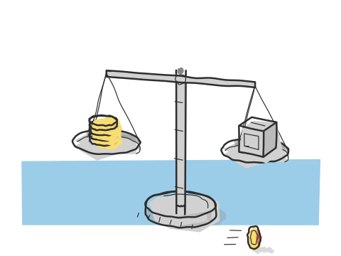

open clearing engine
an open-source experimental clearing & settlement engine in rust.

what it is
a clearing house sits between two sides of a trade and guarantees it settles. this engine takes executed trades and turns them into settlement obligations, through the same pipeline a real clearing corporation uses — novation → position keeping → multilateral netting → settlement — with a span portfolio-risk engine sitting on top.
this is research and learning infrastructure. the embedded implementations run without external services. production adapters and scaling work remain separate from that embedded path. the codebase is a cargo workspace laid out hexagonally — ports and adapters — so the financial logic never depends on the plumbing.
follow three obligations
a small cash-netting example you can step through. the amounts are sample units; this illustration runs independently of the rust project.
210 units gross → 60 units payable
a owes b 100 units, b owes c 70, and c owes a 40. after netting, a pays 60 to the clearing house, which pays 30 each to b and c.
the three net positions sum to zero. 150 units of the original obligations offset.
simplified to one currency and one settlement date. securities delivery, margin, fees, and default handling are outside this walkthrough.
the clearing cycle
why event sourcing
every state change is an event. that means the whole settlement run can be replayed from the log and produce a byte-identical result — which is exactly the property a regulator or an auditor wants. it also makes the determinism tests possible: pin a golden obligation file, then prove the engine never drifts from it.
where it stands
implemented: the documented first iteration includes the embedded clearing cycle, event replay, span risk calculations, api/cli, dashboard, and a development deployment.
still to validate: production adapters, scaling, and operational readiness. this is not a live clearing service or a claim of regulatory certification.
engineering field notes
- the hard part
- correctness has to survive a replay. the same event log should produce the same settlement output, not just a plausible total.
- the tradeoff
- an explicit event log and separate adapters add structure, but keep the clearing logic independent of its storage and transport.
- what i'd validate next
- adapter failure and recovery behavior, then repeatable load tests before making any throughput claims.
built by dharun ashokkumar